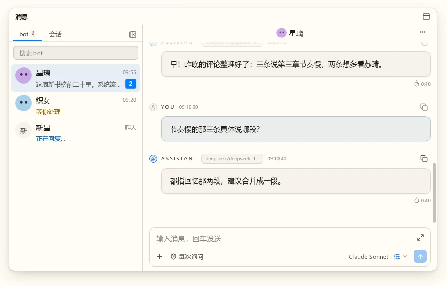

第 1 轮：消息视图浮成窗口
浮动窗的头画成哪样？
推荐 B 自绘头：列表栏通到顶，“星璃”那一行就是窗口头，少一行、两栏第一行等高。
A 现状




bot 与会话用哪种切换？
推荐 B 标题式：没有横线，当前页靠字重与颜色区分，和右边的对话头同一行高。
A 现状的下划线标签
B 标题式
C 分段控件
nb-ui 里分段控件用于同一份内容换看法，这里是换去处。
直接做，不用答
| 哪里 | 改成什么 |
|---|---|
| 列表栏宽度 | 拖列表栏右边的线改宽度，用 nb-layout 的分栏；拖窄过了最小宽度吸成头像列，往回拖展开；宽度记住 |
| 停靠在右栏、侧栏时 | 头的画法不变 |
已定
- 浮动窗里内置视图可以自绘整个头，停靠不变（开发者 2026-11-25）